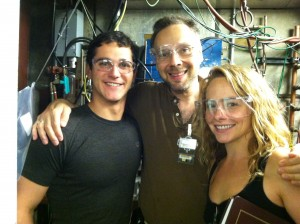

Without any doubt, the best thing about teaching for Software Carpentry is making a difference for someone and getting to hear about it. One of our students at the Lawrence Berkeley Lab, nuclear engineer Dr. Bethany Goldblum, was impressed enough by Katy Huff's presentation of git that she wanted her team to start using version control.
Bethany's description of her team's past code management practices is typical of academic projects, with many people modifying their own copy of a code until that "resulted in over 20 versions of the codes, each with bugs of its own." On their current project "a postdoc is in the process of developing the code, but now every time he makes a change, he uploads it to a different directory on our analysis machine and we just have multiple copies of almost the same code floating around. Unless one is careful, they may not know which code is the most recent version. I believe there is some fear there to undo anything that the original developer put in place."
These are exactly the problems version control is meant to solve. With a project under version control there is only one canonical source of the code. Changes made by individual contributors are easily shared with the group by committing them back to the original source. The entire history of the project is always available with records of every change and why it was made. Special versions of the code, such as original copies or versions used for papers can be tagged with meaningful names to be easily accessible.

Bethany and some of her team doing a science. Left to right: Nick Brickner (UC Berkeley), Lee Bernstein (LLNL), Bethany Goldblum (UC Berkeley)
Bethany told us "I didn't even know version control existed until I attended the [UC Berkeley] Python BootCamp and didn't really understand how to use it until after the Software Carpentry workshop." Bethany's team now has their code in a git repository on the code hosting site Bitbucket (chosen because LBL provides free private hosting there). All of their changes are tracked and each member of the team always has an up-to-date version of the code. They are even using Bitbucket's issue tracker and wiki to organize tasks and documentation!
Today Bethany's team is protected when inevitable mistakes like deleting or overwriting source files occur. They won't find and then forget about bugs. The whole team will benefit when someone adds a new feature. Today Bethany and her team are working like software engineers.
This is what Software Carpentry is all about: helping scientists and engineers learn the tools and practices that make software development a tolerable, even enjoyable, task for those of us that do it every day. And nothing is more rewarding to the instructors who contribute their time and experience than a success story like this.
Originally posted 2012-11-16 by Matt Davis in Community, Lawrence Berkeley Laboratory.
comments powered by Disqus